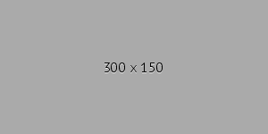

Assignment 1
Created a basic website with headings, paragraphs, images, lists, tables, and external links.
Assignment 2
Added a stylessheet to the created website and made a navigation section.
Assignment 3
Learned how to use media querys and flex boxes.
Assignment 4
Used flex and other skills to style the main page differently.
Assignment 5
Recreated a UofSC Research website.
Assignment 6
Introduced javascript into website creation.